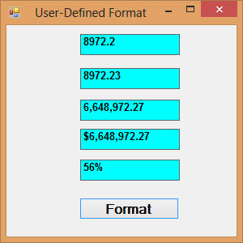
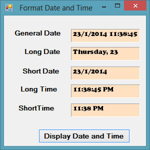
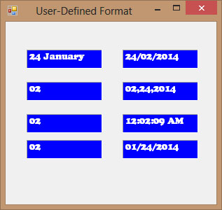

Visual Studio 2013 Lesson 19: The Format Function
[Lesson 18] <<[Contents] >> [Lesson 20]
The Format function in Visual Studio 2013 is a very useful formatting function. It is used to display numbers as well as date and time in various formats.
19.1 Format function for Numbers
There are two types of Format functions for numbers, one of them is the built-in or predefined format while another one can be defined by the user.
19.1(a) Built-in Format function for Numbers
The syntax of the built-in Format function is
Format (n, “style argument”)
where n is a number.
The list of style arguments in Visual Studio 2013 is given in Table 19.1.
Table 19.1
| Style argument | Explanation | Example |
|---|---|---|
| General Number | To display the number without having separators between thousands. | Format(8972.234, “General Number”)=8972.234 |
| Fixed | To display the number without having separators between thousands and rounds it up to two decimal places. | Format(8972.2, “Fixed”)=8972.23 |
| Standard | To display the number with separators or separators between thousands and rounds it up to two decimal places. | Format(6648972.265, “Standard”)= 6,648,972.27 |
| Currency | To display the number with the dollar sign in front, has separators between thousands as well as rounding it up to two decimal places. | Format(6648972.265, “Currency”)= $6,648,972.27 |
| Percent | Converts the number to the percentage form and displays a % sign and rounds it up to two decimal places. | Format(0.56324, “Percent”)=56.32 % |
Example 19.1
Private Sub BtnFormat_Click(sender As Object, e As EventArgs) Handles BtnFormat.Click
Label1.Text = Format(8972.234, “General Number”)
Label2.Text = Format(8972.2, “Fixed”)
Label3.Text = Format(6648972.265, “Standard”)
Label4.Text = Format(6648972.265, “Currency”)
Label5.Text = Format(0.56324, “Percent”)
End Sub
The Output
 Figure
19.1
Figure
19.1
19.1(b) User-Defined Format
The syntax of the user-defined Format function is
Format (n, “user’s format”)
Although it is known as user-defined format, we still need to follows certain formatting styles. Examples of user-defined formatting style are listed in Table 19.2
Table 19.2
| Format | Description | Output |
|---|---|---|
| Format(781234.576,”0″) | Rounds to whole number without separators between thousands | 781235 |
| Format(781234.576,”0.0″) | Rounds to 1 decimal place without separators between thousands | 781234.6 |
| Format(781234.576,”0.00″) | Rounds to 2 decimal place without separators between thousands | 781234.58 |
| Format(781234.576,”#,##0.00″) | Rounds to 2 decimal place with separators between thousands | 781,234.58 |
| Format(781234.576,”$#,##0.00″) | Displays dollar sign and Rounds to 2 decimal place with separators between thousands | $781,234.58 |
| Format(0.576,”0%”) | Converts to percentage form without decimal place | 58% |
| Format(0.5768,”0%”) | Converts to percentage form with two decimal places | 57.68% |
Example 19.2
Private Sub BtnFormat_Click(sender As Object, e As EventArgs) Handles BtnFormat.Click
Label1.Text = Format(8972.234, “0.0”)
Label2.Text = Format(8972.2345, “0.00”)
Label3.Text = Format(6648972.265, “#,##0.00”)
Label4.Text = Format(6648972.265, “$#,##0.00”)
Label5.Text = Format(0.56324, “0%”)
End Sub
The Output
Figure 19.2
{kind=link}
19.2 Formatting Date and Time
There are two types of Format functions for Date and time one of them is the built-in or predefined format while another one can be defined by the user.
19.2(a) Formatting Date and time using predefined formats
In Visual Studio 2013 , we can format date and time using predefined formats or user-defined formats. The predefined formats of date and time are shown in Table 19.3
Table 19.3
| Format | description |
|---|---|
| Format(Now, “General Date”) | Displays current date and time |
| Format(Now, “Long Date”) | Displays current date in long format |
| Format (Now, “Short date”) | Displays current date in short format |
| Format (Now, “Long Time”) | Displays current time in long format. |
| Format (Now, “Short Time”) | Displays current time in short format. |
Example 19.3
Private Sub BtnDisplay_Click(sender As Object, e As EventArgs) Handles BtnDisplay.Click
Label1.Text = Format(Now, “General Date”)
Label2.Text = Format(Now, “Long Date”)
Label3.Text = Format(Now, “short Date”)
Label4.Text = Format(Now, “Long Time”) Label5.Text = Format(Now, “Short
Time”)
End Sub
The output
Figure 19.3
{kind=link}
You can display dates and time in real-time using a timer and set its property Enabled to true and interval 100. The code is as follows:
Private Sub Timer1_Tick(sender As Object, e As EventArgs) Handles Timer1.Tick
Label1.Text = Format(Now, “General Date”)
Label2.Text = Format(Now, “Long Date”)
Label3.Text = Format(Now, “short Date”)
Label4.Text = Format(Now, “Long Time”)
Label5.Text = Format(Now, “Short Time”)
End Sub
19.2(b) Formatting Date and time using user-defined formats
Beside using the predefined formats, you can also use the user-defined formatting functions. The syntax of a user-defined format for date and time is
Format (expression,style)
Table 19.4
| Format | Description |
|---|---|
| Format (Now, “m”) | Displays current month and date |
| Format (Now, “mm”) | Displays current month in double digits. |
| Format (Now, “mmm”) | Displays abbreviated name of the current month |
| Format (Now, “mmmm”) | Displays full name of the current month. |
| Format (Now, “dd/mm/yyyy”) | Displays current date in the day/month/year format. |
| Format (Now, “mmm,d,yyyy”) | Displays current date in the Month, Day, Year Format |
| Format (Now, “h:mm:ss tt”) | Dispalys current time in hour:minute:second format and show am/pm |
| Format (Now, “MM/dd/yyyy h:mm:ss) | Dispalys current date and time in hour:minute:second format |
Example 19.4
Private Sub Timer1_Tick(sender As Object, e As EventArgs) Handles Timer1.Tick
Label1.Text = Format(Now, “m”)
Label2.Text = Format(Now, “mm”)
Label3.Text = Format(Now, “mmm”)
Label4.Text = Format(Now, “mmmm”)
Label5.Text = Format(Now, “dd/mm/yyyy”)
Label6.Text = Format(Now, “mmm,d,yyyy”)
Label7.Text = Format(Now, “h:mm:ss tt”)
Label8.Text = Format(Now, “MM/dd/yyyy h:mm:ss tt”)
End Sub
The output 
{kind=link}
Figure 19.4